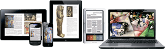

Place books face-up on KIC Bookeye 4's large bed & capture two pages at a time - much faster than flatbed scanners and copiers.
Use whole pages or clip selected pictures, graphs, test, etc. using KIC's large touch screen.
Save scanned images to USB flash drive or cloud storage, send them via email address or transfer images directly to a tablet, notebook PC, or smart phone.
Enhance reports in a word processing program. Drag de-seried images from a flash drive, Cloud storage or email directly into a word processing program, or save images to your computer desktop and use the 'insert picture' function.
Once images are imported into a word processing program, you may want to resize or reposition them or select from several ways that your text can wrap around the pictures.
Library patrons bring loose paper from home to scan, fax and send via email or save to a USB device. A $5 USB thumb drive can store thousands of important documents.
Many citizens don't have a safe, reliable place to store and organize their important documents. Documents scanned at the local library can be viewed with any low cost smart phone.
Quickly scan many pages to take with you and study at your convenience in the comfort of your home where you can read, search, markup, and print at your leisure
With KIC in your library, instructors are no longer restricted to a single text book. They can freely assign many excerpts from many books without adding to the students' already high cost of text books.